Recibos impresos que hay que repartir, firmar y archivar.
Se firman desde el celular y quedan guardados.
Recursos humanos sin papeles
Scuadra junta en un solo lugar lo que hoy está repartido en planillas, mails y carpetas. RRHH lo maneja desde un panel; tu equipo, desde el celular.
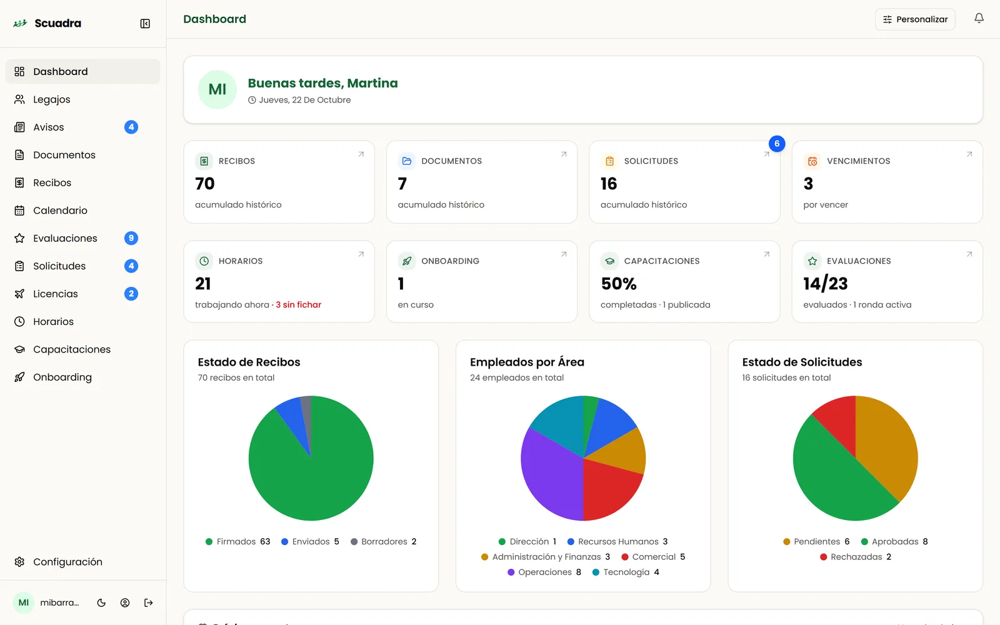
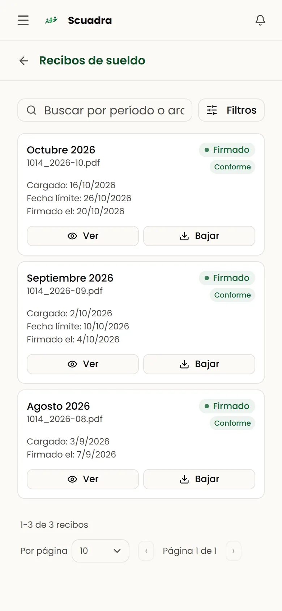
Lo que pasa hoy
Recibos impresos que hay que repartir, firmar y archivar.
Se firman desde el celular y quedan guardados.
Pedidos por WhatsApp y mail que nadie sabe si se aprobaron.
Cada pedido tiene su estado y su aprobador.
Planillas de horario y vacaciones que nadie actualiza.
Fichaje, saldos y ausencias al día.
Recibos de sueldo
Subís los PDF que te da tu sistema de sueldos y Scuadra hace el resto: los reparte, avisa a cada empleado y te muestra quién falta firmar.
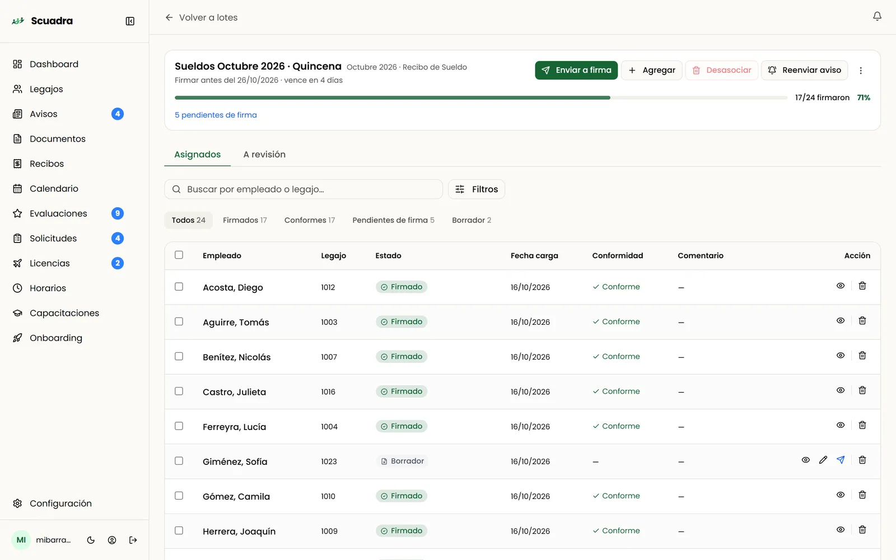
Todo en un solo lugar
Nada de dibujos: es Scuadra funcionando, con una empresa de ejemplo.
La ficha completa de cada persona, con sus documentos, recibos y su lugar en el organigrama.
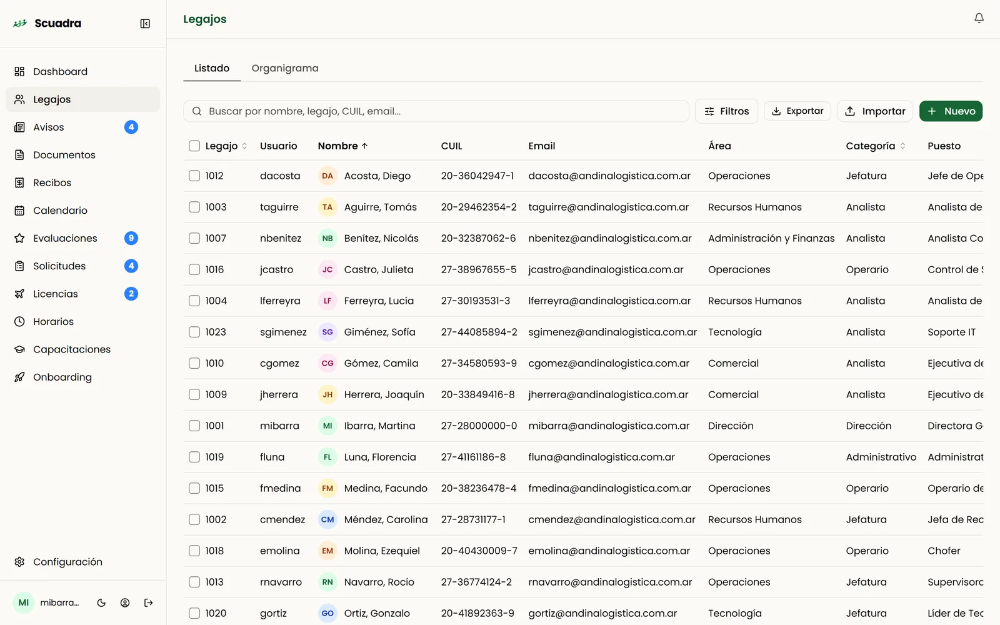
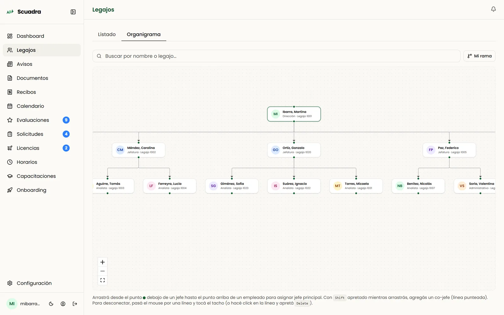
Certificados, adelantos, reintegros o cualquier trámite que definas, con el circuito de aprobación que quieras.
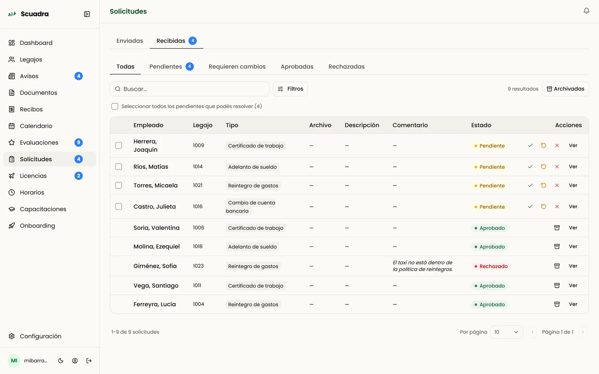
El empleado pide los días, su jefe aprueba y el saldo de vacaciones se descuenta solo, sin contar feriados.
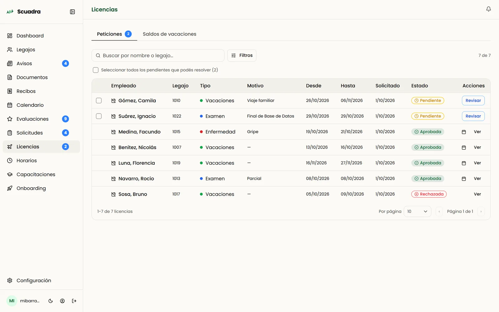
Cada uno ficha desde el celular y la planilla del mes se arma sola: horas trabajadas, llegadas tarde y saldo.
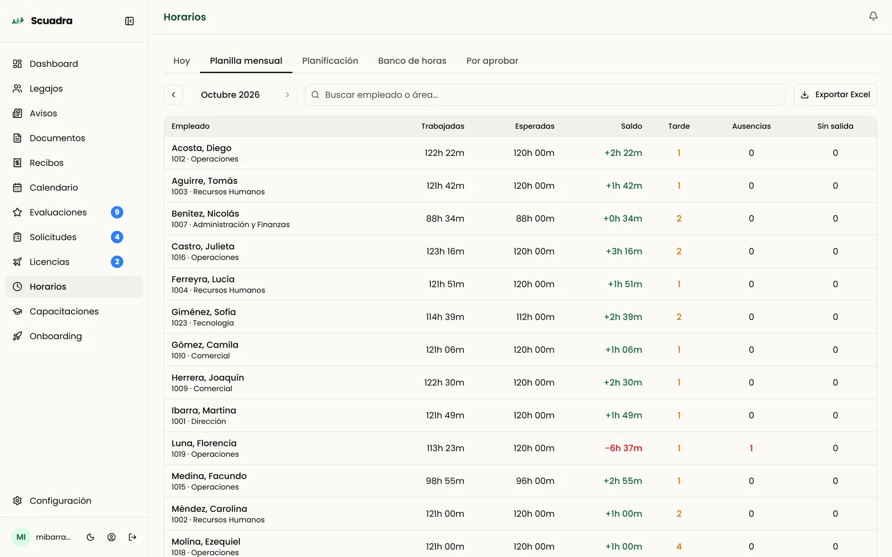
Feriados, capacitaciones, eventos y quién está de licencia, todo en una misma vista.
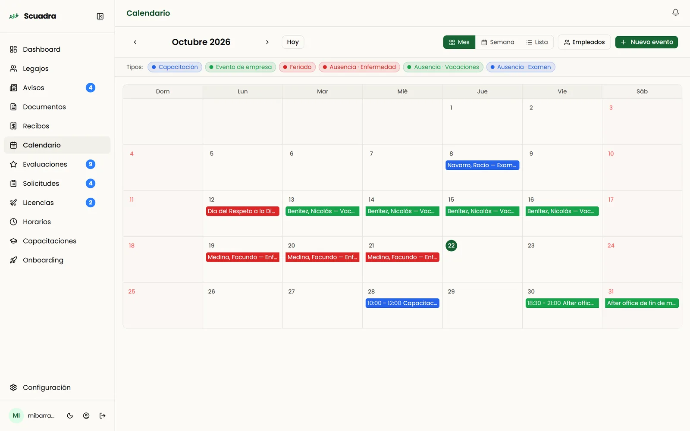
Para tu equipo
Entra desde el navegador con su mail y su contraseña. Ve sus recibos, ficha, pide días y se entera de las novedades.
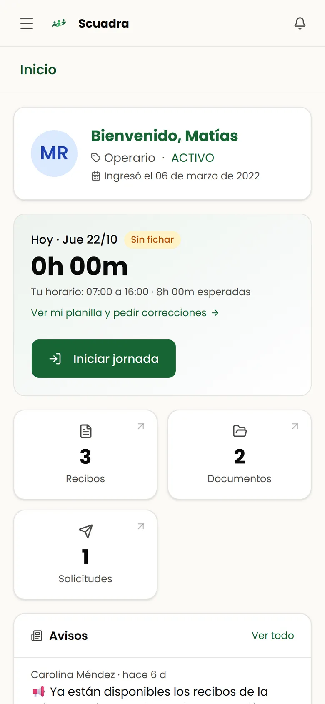
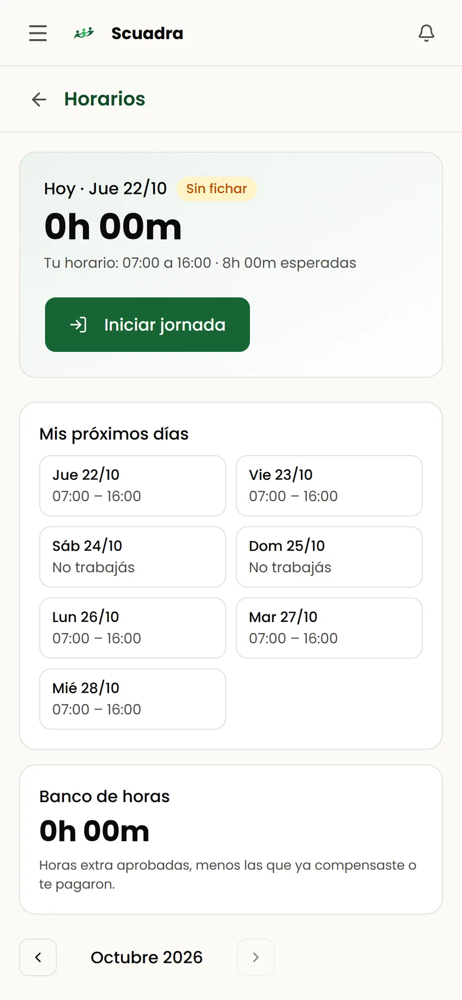
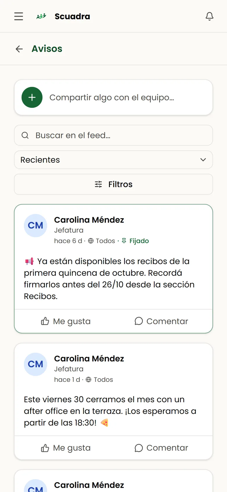
Control y seguridad
Definís qué puede hacer cada administrador: recibos, legajos, solicitudes, horarios.
Cada jefe ve y aprueba solo lo de su equipo.
Queda registrado quién hizo qué y cuándo: cada firma, aprobación y cambio.
Con la contraseña personal del empleado, con firma ológrafa y hasta con evidencias biométricas que confirman la identidad.
Tu sistema de liquidación de sueldos carga legajos y recibos a través de API o carpeta SFTP.
Y en la campanita. Cada persona elige qué avisos quiere recibir.
Cómo empezás
Sin instalación y sin cambiar tu sistema de sueldos.
Importás los legajos desde un Excel. A cada persona le llega la invitación por mail.
Los PDF del mes, como te los da tu liquidación. Scuadra los reparte por legajo.
Desde el celular, en minutos. Vos ves el avance en tiempo real.
Preguntas
No. Scuadra funciona en el navegador del celular o de la computadora. Entran con su mail y la contraseña que eligen al aceptar la invitación.
Abre el recibo, lo lee y confirma con su contraseña si está conforme o no, y puede dejar un comentario. Queda registrada la fecha, la hora y el usuario. Si tu empresa usa un proveedor de firma digital, Scuadra se conecta con él.
No. Seguís liquidando como siempre y subís los PDF que te da tu sistema. Si querés automatizarlo, tu sistema puede mandar los recibos solo por API o por una carpeta SFTP.
Le llega un recordatorio antes del plazo y otro aviso cuando vence. Desde el lote ves quién falta y le podés reenviar el aviso con un plazo nuevo.
Cada administrador ve solo los módulos que le habilitás y, si tiene un equipo a cargo, solo a su equipo. Todo lo que se hace queda en la auditoría.
Sí. Importás un Excel con los datos y el nombre de usuario de cada persona. Scuadra valida que no haya repetidos y manda las invitaciones.
Sí. Choferes, operarios o equipos en la calle fichan, firman y piden días desde el celular.
Te mostramos Scuadra con tus propios procesos y te ayudamos a cargar tu primer lote de recibos.